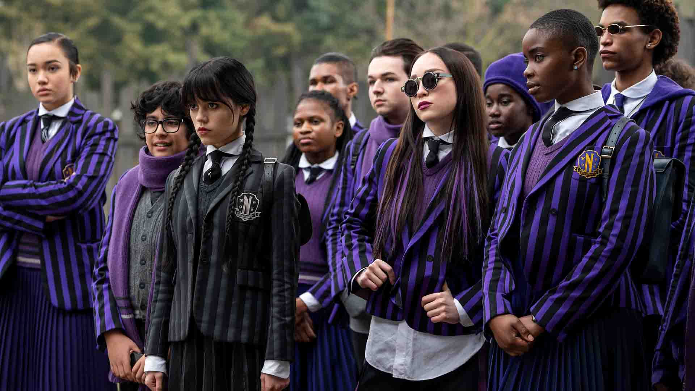
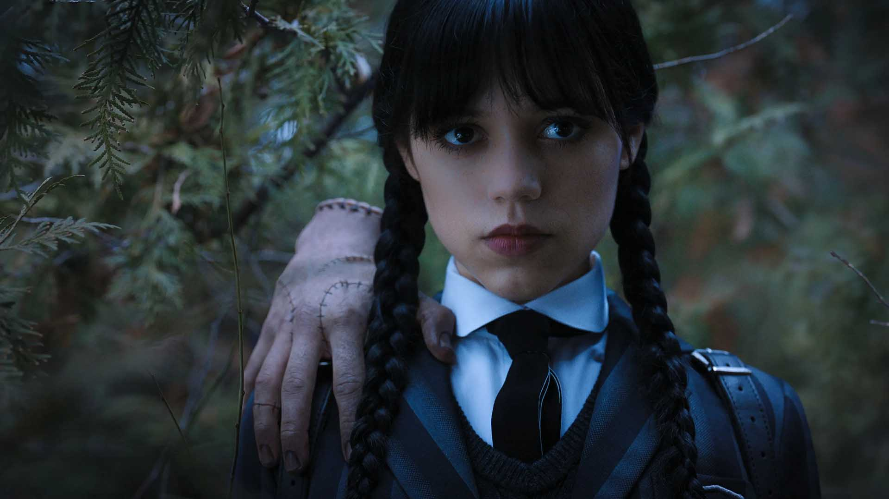
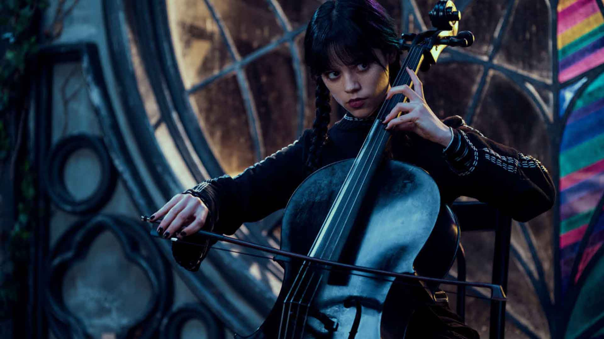

اسپین آفی از داستان خانواده آدامز یعنی سریال ونزدی (Wednesday) مدتی است که پخش خود را در نتفلیکس آغاز کرده است و همین حالا هم رکورد بیشترین میزان تماشا در عرض یک هفته را شکسته است.
درست است که خانوادهی آدامز را نمیتوان در رتبههای اول مشهورترین خانوادههای داستانی و ساختگی دید، اما قطعا میتوان آن را یکی از موارد این فهرست دانست؛ هرچند که به پای خانوادهی گلدبرگ، سیمپسونها و سوپرانوها و غیره نمیرسد. این خانوادهی مشهور در سال ۱۹۳۸ برای اولینبار در مجله نیویورکر به نمایش درآمد و هنوز هم که هنوز است جذابیت خود را حفظ کرده است. این خانواده که توسط چارلز آدامز خلق شده بودند، تا به امروز به اشکال مختلف در رسانههای متنوع مانند تلویزیون، سینما، بازیهای ویدیویی، کمیک بوکها و غیره به تصویر کشیده شدند. چارلز آدامز تا لحظه مرگ خود، تمام وقتش را صرف خلق آثار جدیدی از خانواده آدامز کرد. خانوادهی آدامز یک وارونگی طنزآمیز از یک خانواده ایدهآل در قرن بیستم آمریکا بود؛ یک قبیله اشرافی، ثروتمند و البته عجیب و غریب که از ترسناک بودن خود لذت میبردند. اصلا هم به این موضوع توجه نمیکردند که چقدر در نظر دیگران عجیب یا ترسناک هستند؛ اگر هم متوجه این موضوع میشدند، آنچنان برایشان مهم نبود که بخواهند کاری برایش انجام دهند. از سال ۱۹۶۴ آثار تلویزیونی مختلفی حول محور آنها ساخته شد (علاوهبر آثار سینمایی و غیره) و آخرین سریال در سال ۱۹۹۹ به پایان رسید. گذشت و گذشت تا به اواخر سال ۲۰۲۰ و معرفی سریال Wednesday (ونزدی) توسط شرکت امجیام رسید؛ آن هم با کارگردانی تیم برتون.
چند ماه بعد، سرویس استریم نتفلیکس ساخت این سریال با ۸ قسمت را در دستور کار قرار داد و به مرور زمان بازیگران اضافه و روند فیلمبرداری آغاز شد. جالب است بدانید که کریستینا ریچی، کسی که در کودکی نقش ونزدی را ایفا کرده بود، در سریال جدید هم نقشی را ایفا میکند. همانطور که بالاتر هم گفته شد، سریال ونزدی همین حالا هم رتبه ۱ را در بین ۱۰ مجموعه برتر نتفلیکس دارد و توانسته رکورد بزرگی را به نام خود ثبت کند؛ حتی توانسته خود را به پای سریال Stranger Things (اتفاقات ناآشنا) هم برساند و آن را کنار بزند. اما بااینحال، با وجود چنین محبوبیت و موفقیتی، ظاهرا نتفلیکس قصد ندارد آن را برای فصل دوم تمدید کند. سریال ونزدی، همانطور که از اسمش هم برمیآید، حول محور دختر خانواده یعنی ونزدی آدامز میچرخد. همان ابتدای داستان ما شاهد این هستیم که قلدرهای مدرسه، برادر ونزدی یعنی پگزلی را اذیت و او را داخل کمدش حبس کردند. به همین دلیل هم او تصمیم میگیرد که با رها کردن یک سری پیراناهای زنده در استخر مدرسه، انتقام برادرش را از اعضای تیم واترپلو بگیرد؛ زیرا معتقد است که فقط خودش حق دارد برادرش را اذیت کند. به همین دلیل هم این دختر بیچاره از مدرسه اخراج میشود و مجبور است باری دیگر به مدرسه جدیدی برود؛ اما این بار دیگر همه چیز فرق میکند.
اخراج شدن ونزدی باعث میشود تا والدین او یعنی گومز و مورتیشیا آدامز، او را در آکادمی نورمور که در جریکو (ورمونت) قرار دارد، ثبت نام کنند. این مدرسه مخصوص طردشدههای هیولایی است که از همه جا رانده و از همه جا مانده شدند؛ جایی که زمانی پدر و مادر خودش هم در آنجا تحصیل میکردند و همانجا با هم آشنا شدند. شخصیت سرد و بیعاطفهی ونزدی و همچنین طبیعت سرکشی که دارد، اجازه نمیدهد راحت با همکلاسیهایش ارتباط برقرار کند و با آنها دوست شود. همین موضوع باعث میشود که بارها و بارها با مدیر مدرسه درگیر شود و به دردسر بیفتد. در همین حین، ونزدی به این موضوع هم پی میبرد که درست همانند مادرش، تواناییهای ذهنی خاصی دارد که میتواند به او کمک بزرگی بکند؛ برای اینکه بتواند یک معمای قتل محلی بسیار مهم را با کمک کلانتر جریکو، حل کند. سریال ونزدی، ماجراهای این دختر جوان را با چاشنی اسرارآمیز، المانهای ماوراءطبیعی و همچنین معمایی برای مخاطب به تصویر میکشد. ونزدی همزمان با گذراندن دوران مدرسه، تلاش میکند تا روی قدرتهای روانی در حال ظهورش تسلط پیدا کند، یک قتل عام وحشیانه را خنثی کند (اتفاقی که این شهر کوچک را غرق در وحشت کرده است) و همچنین یک معمای اسرارآمیز و ماوراءطبیعی را هم حل کند.
۲۵ سال پیش، دقیقا همین معما، پدر و مادر خودش را هم بیچاره کرده بود؛ زیرا آنها هرچه تلاش کردند تا پاسخی برای آن پیدا کنند، موفق نشدند. به همین دلیل تمام امید خاندان آدامز به ونزدی است تا جوابی برای سؤالهای آنها پیدا کند. تمام این ماجراها زمانی اتفاق میفتد که ونزدی سخت در تلاش است تا با روابط جدید و بسیار پیچیدهای که در نورمور آغاز کرده، کنار بیاید و خود را با شرایط تازه وفق دهد؛ زیرا پیش از این، او هیچوقت چنین شرایطی را تجربه نکرده بود و کاملا همه چیز برایش تازگی دارد. او در این آکادمی و مدرسه جدید با ماجراها، موقعیتها، افراد، احساسات و روابطی آشنا میشود که هیچ پیشزمینهای برایش نداشت و حالا نمیداند چطور باید با آنها برخورد کند.